AKAI （アカイ）/A&D （エー・アンド・デー）
1946年設立の赤井電機のオーディオブランド。1954年に日本で初めてテープレコーダーの開発に成功。テープ・デッキで定評があり、盛時には各種のオーディオ製品を販売していた。しかし80年代以降次第に衰退し、1987年、資本関係があった三菱電機と提携し、「A&D」ブランドを設立したが、1991年に撤退した。1999年末、黒字経営であった電子楽器部門が独立、2000年11月2日、民事再生法を申請し、実質破綻した。現在では海外資本のブランドとして、名前だけ存続しているが、具体的な製品情報は見当たらない。
ヘッドフォンについては、オーディオメーカーとして勢いのあった時期に、主として他社からOEM調達したと思われる機種を販売していた。1980年半ばに大幅に製品ラインを整理したが、1987年の「A&D」ブランド立ち上げの際に復活。しかし同ブランドの撤退で消えた。
AKAI （アカイ）の製品を以下のように分類する。（この分類は個人的な意見で、メーカーの分類ではありません）
�T.AKAI
（アカイ）時代の製品
�@1970年代の製品
（コンデンサー型） AEH-10
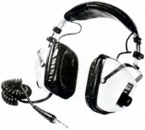
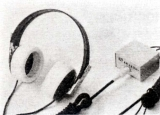
(左 ASE-20 右 AEH-10)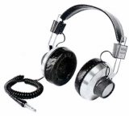 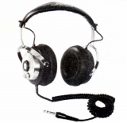
＊ASE-15-Jについて豊永尚輝 氏所有機の画像を使用しました。ありがとうございます。
（動電全面駆動型） ASE-40-J
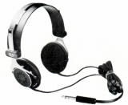
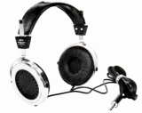
(左 ASE-15J 右 ASH-40J)＊海外サイトではASE-50という動電全面駆動型の画像がある。フォステクスのRP型らしき振動板の画像があった。
＊ネットオークションで見かけた他のアカイのヘッドフォンにはASE-9とASE-9Ｓがある。ASE-9ＳはASG-9Ｓに酷似した機種で、引用した資料 Stereo Sound YEAR BOOK1970の方が誤記の可能性がある。ただし海外のオークション画像で示されたスペックに差があるので断言できない。ASE-9は既存のアカイのヘッドフォンには似た機種がない。
＊ASE-15-J、ASE-22-J、ASE-26-J、ASE-40-Jについて
海外のサイトで、この世代のアカイのヘッドフォンの型番の末尾に「-J」とつけるのは間違いであるとの指摘を受けたが、国内での資料、そしてアカイ自身のカタログでも末尾に「-J」がついているので、修正しない。
�A1980年代の製品
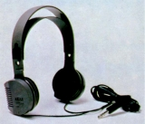
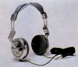
(左 ASE-17 右 ASH-65)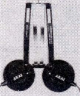
(ASE-M2)
�U.A&D時代の製品
1987年の「A&D」ブランド立ち上げの以降の製品。型番の「SH」はダイヤトーン（三菱電機）のものを使用していた。ASE-M2の後継モデルのような機種があるので、「アカイ」のページに収めた。
（インナーイヤ型) SH-M02 2
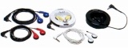
(SH-M02)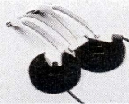
(SH-M21)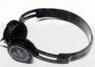